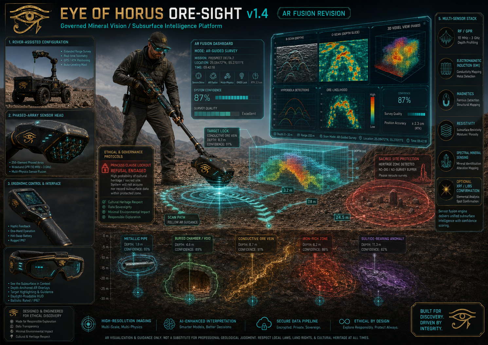

Illustrated research concept
EYE OF HORUS ORE-SIGHT v1.4
Purpose
Illustrated mineral-survey concept using multiple sensing modalities and an augmented-reality interpretation interface, with proposed cultural heritage safeguards.

Evidence and limits
No calibrated subsurface observations, confirmed mineral deposits, verified depth or classification accuracy, site authorization, or validated heritage-protection mechanism. Dashboard results and coordinates are illustrative, not survey evidence.
Next review gate
Independent geophysical review; compare interpretations against known non-sensitive reference targets and confirm permissions before survey work.
Recovered illustration from Mr. Peloquin's collaborative design collection. Specific original artwork authorship and independent review are unverified.